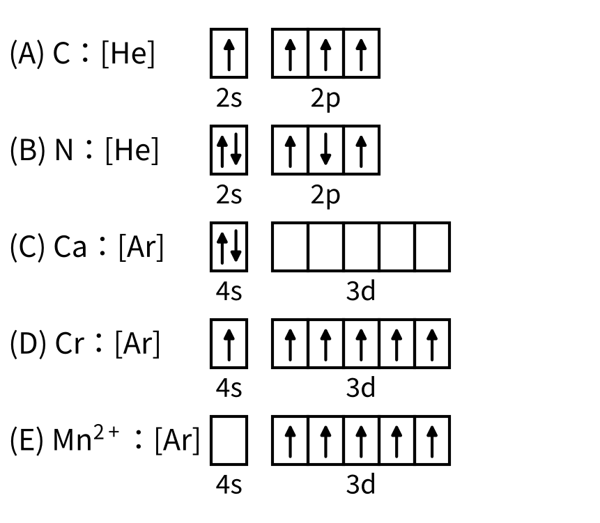

基礎題
7N 的基態電子組態，下列何者正確？
- (A) 1s22s22px22py1
- (B) 1s22s22px12py12pz1
- (C) 1s22s12px22py12pz1
- (D) 1s22s22px3
- (E) 1s12s22px22py2
看答案與詳解
答案：(B)
(A) 違反洪德（激發態） (C)(E) 低能量軌域未填滿（激發態） (D) 一個軌域 3 個電子，違反包立原理
故選 (B)
某基態原子最後填入的電子組態為 4p2，則此原子的原子序為何？
- (A) 14
- (B) 30
- (C) 32
- (D) 34
- (E) 50
看答案與詳解
答案：(C)
故選 (C)
下列基態原子或離子中，何者的 3d 軌域恰為半填滿？
- (A) Fe
- (B) Mn2+
- (C) Cu
- (D) Fe2+
- (E) Co
看答案與詳解
答案：(B)
Cu：3d10 Fe2+：3d6 Co：3d7
故選 (B)
下列電子組態，何者表示處於激發態的原子？
- (A) 1s22s2
- (B) 1s22s22p6
- (C) 1s22s22p53s1
- (D) 1s22s22p63s23p1
- (E) 1s22s22p3
看答案與詳解
答案：(C)
其餘皆依能量由低到高填入，為基態
下列離子中，何者不具有鈍氣的電子組態？
- (A) K+
- (B) Ti4+
- (C) Cu+
- (D) Se2−
- (E) Sr2+
看答案與詳解
答案：(C)
Cu+：[Ar]3d10，不是鈍氣組態 → (C)
「同一原子中，任兩個電子的四個量子數不能完全相同」，此規則稱為？
- (A) 構築原理
- (B) 包立不相容原理
- (C) 洪德定則
- (D) 測不準原理
- (E) 能量守恆定律
看答案與詳解
答案：(B)
故選 (B)
35Br 的基態電子組態為何？
- (A) [Ar]4s24p5
- (B) [Ar]3d104s24p5
- (C) [Ar]3d104s14p6
- (D) [Kr]4s24p5
- (E) [Ar]3d74s24p8
看答案與詳解
答案：(B)
故選 (B)
Fe3+（Fe 的原子序 26）的基態電子組態為何？
- (A) [Ar]3d34s2
- (B) [Ar]3d5
- (C) [Ar]3d6
- (D) [Ar]3d44s1
- (E) [Ar]4s23d6
看答案與詳解
答案：(B)
故選 (B)
多電子原子填入電子的軌域順序，下列何者正確？
- (A) 1s→2s→2p→3s→3p→3d→4s→4p
- (B) 1s→2s→2p→3s→3p→4s→3d→4p
- (C) 1s→2s→3s→2p→3p→4s→3d→4p
- (D) 1s→2s→2p→3s→4s→3p→3d→4p
- (E) 1s→2p→2s→3p→3s→4s→3d→4p
看答案與詳解
答案：(B)
故選 (B)
下列電子組態，哪些不可能存在？（多選）
- (A) 1s22s22p7
- (B) 1s22s12p1
- (C) 1s22s22p63f1
- (D) 1s12s1
- (E) 1s21p1
看答案與詳解
答案：(A)(C)(E)
(C) ✘ n＝3 沒有 f 軌域
(E) ✘ n＝1 沒有 p 軌域
(B)(D) 是激發態，可以存在
下列基態原子中，哪些沒有未成對電子？（多選）
- (A) 4Be
- (B) 8O
- (C) 18Ar
- (D) 24Cr
- (E) 30Zn
看答案與詳解
答案：(A)(C)(E)
(B) ✘ O：2p4 有 2 個未成對
(C) ✔ Ar：全滿
(D) ✘ Cr：3d54s1 有 6 個未成對
(E) ✔ Zn：3d104s2，全部成對
下列哪些粒子的基態電子組態與 Ne 相同？（多選）
- (A) F−
- (B) Na+
- (C) Mg
- (D) Al3+
- (E) K+
看答案與詳解
答案：(A)(B)(D)
(A) ✔ F−：9＋1＝10
(B) ✔ Na+：11－1＝10
(C) ✘ Mg：12 個
(D) ✔ Al3+：13－3＝10
(E) ✘ K+：18 個（與 Ar 相同）
下列哪些粒子的基態電子組態為 [Ar]3d10？（多選）
- (A) Cu+
- (B) Zn2+
- (C) Ga3+
- (D) Ni
- (E) Cu
看答案與詳解
答案：(A)(B)(C)
(A) ✔ Cu：[Ar]3d104s1，失去 4s 電子 → [Ar]3d10
(B) ✔ Zn2+：30－2＝28
(C) ✔ Ga3+：31－3＝28
(D) ✘ Ni：[Ar]3d84s2
(E) ✘ Cu：[Ar]3d104s1，還有 4s 電子
進階題
Co2+（Co 的原子序 27）在基態時有幾個未成對電子？
- (A) 1
- (B) 2
- (C) 3
- (D) 4
- (E) 5
看答案與詳解
答案：(C)
五個 3d 軌域：前 5 個電子各占一個，另 2 個成對 → 未成對 5－2＝3
故選 (C)
氧原子的下列電子組態，何者能量最低？
- (A) 1s22s22px22py2
- (B) 1s22s22px22py12pz1
- (C) 1s22s12px22py22pz1
- (D) 1s22s22px12py12pz13s1
- (E) 1s22s22px22pz2
看答案與詳解
答案：(B)
(A)(E) 違反洪德 (C) 2s 未滿 (D) 電子在 3s
以鈍氣核心表示 26Fe 的基態電子組態，下列何者正確？
- (A) [Ar]3d8
- (B) [Ar]4s24p6
- (C) [Ar]3d64s2
- (D) [Ne]3d64s2
- (E) [Ar]3d54s1
看答案與詳解
答案：(C)
(D) [Ne] 只有 10 個電子，總數不對
故選 (C)
有關 Cr 與 Cu 的電子組態，下列敘述何者正確？
- (A) Cr 的基態為 [Ar]3d44s2
- (B) Cu 的基態為 [Ar]3d94s2
- (C) Cu+ 的基態為 [Ar]3d10
- (D) Cr3+ 的基態為 [Ar]3d14s2
- (E) Cu2+ 的基態為 [Ar]3d84s1
看答案與詳解
答案：(C)
Cu+ 失去 4s1 → [Ar]3d10 ✔
Cr3+：[Ar]3d3；Cu2+：[Ar]3d9
故選 (C)
某 ＋2 價離子 M2+ 的基態電子組態為 [Ar]3d6，則 M 為何？
- (A) Cr
- (B) Mn
- (C) Fe
- (D) Co
- (E) Ni
看答案與詳解
答案：(C)
故選 (C)
下列各粒子所寫的電子組態，哪些是激發態？（多選）
- (A) H：2s1
- (B) N：1s22s22p3
- (C) Li：1s22p1
- (D) O+：1s22s22p3
- (E) F：1s22s22p43s1
看答案與詳解
答案：(A)(C)(E)
(B) 基態
(C) ✔ Li 基態為 1s22s1
(D) O+ 有 7 個電子，1s22s22p3 為基態
(E) ✔ F 基態為 1s22s22p5
下列各組中的兩個粒子，哪些組的基態電子組態相同？（多選）
- (A) 16O 與 18O
- (B) Cl+ 與 Ar
- (C) 14C 與 14N
- (D) He 與 H−
- (E) Al3+ 與 F−
看答案與詳解
答案：(A)(D)(E)
(A) ✔ 同位素，都是 8 個電子
(B) ✘ Cl+ 16 個，Ar 18 個
(C) ✘ 6 個與 7 個
(D) ✔ 都是 2 個：1s2
(E) ✔ 都是 10 個
下列電子組態與元素的配對，哪些正確？（多選）
- (A) [Ar]3d54s1：Cr
- (B) [Ar]3d104s1：Cu
- (C) [Kr]5s2：Sr
- (D) [Ne]3s23p4：Cl
- (E) [Ar]3d104s24p1：Al
看答案與詳解
答案：(A)(B)(C)
(B) ✔ 29 號 Cu（3d 全滿特例）
(C) ✔ 38 號 Sr
(D) ✘ 16 號 S
(E) ✘ 31 號 Ga
下列基態粒子中，哪些含有未成對電子？（多選）
- (A) O
- (B) Ne
- (C) Zn2+
- (D) Fe2+
- (E) Na
看答案與詳解
答案：(A)(D)(E)
(B) ✘ Ne：全滿
(C) ✘ Zn2+：3d10 全滿
(D) ✔ Fe2+：3d6，4 個未成對
(E) ✔ Na：3s1，1 個未成對
〔補充〕含未成對電子的物質具順磁性，可被磁鐵吸引
下列基態粒子中，哪些沒有未成對電子？（多選）
- (A) O2−
- (B) N+
- (C) Mg
- (D) Na−
- (E) B+
看答案與詳解
答案：(A)(C)(D)(E)
(B) N+：2p2，2 個未成對 ✘
(C) Mg：3s2 ✔
(D) Na−：12 個電子，3s2 ✔
(E) B+：4 個電子，1s22s2 ✔
寫出下列離子的基態電子組態（以鈍氣核心表示）。
(1) 22Ti2+
(2) 25Mn2+
(3) 29Cu2+
(4) 34Se2−
看答案與詳解
答案：(1) [Ar]3d2 (2) [Ar]3d5 (3) [Ar]3d9 (4) [Ar]3d104s24p6（即 [Kr]）
(1) Ti [Ar]3d24s2 → [Ar]3d2
(2) Mn [Ar]3d54s2 → [Ar]3d5
(3) Cu [Ar]3d104s1 → 失 4s1 與 1 個 3d → [Ar]3d9
(4) Se 34＋2＝36 個電子 → 與 Kr 相同
寫出下列原子的基態電子組態（以鈍氣核心表示）。
(1) 20Ca
(2) 48Cd
(3) 50Sn
看答案與詳解
答案：(1) [Ar]4s2 (2) [Kr]4d105s2 (3) [Kr]4d105s25p2
(2) 48－36＝12：5s24d10
(3) 50－36＝14：5s24d105p2
大考／素養題
氦（He）是惰性氣體中最輕的元素，氦的一個價電子游離後，生成了氦離子（He+）。下列關於He+ 的敘述，哪些正確？（多選）
- (A) 沒有3d 軌域
- (B) He+ 的半徑比He 的半徑大
- (C) 基態He+ 的電子組態與氫原子相同
- (D) 可用波耳的原子模型理論解釋He+ 光譜
- (E) 由He+ 到He2+ 的游離能比由He 到He+ 的游離能大
看答案與詳解
答案：(C)(D)(E)
(B) ✘ 失去電子後，剩下的電子受核吸引更強，半徑變小
(C) ✔ 都是 1s1
(D) ✔ 只有一個電子的類氫粒子
(E) ✔ IE2＞IE1
已知五種電中性的原子，其基態的電子組態如甲～戊所示：
甲、1s22s22p4 乙、1s22s1 丙、1s22s22p2
丁、1s22s22p63s23p4 戊、1s22s22p63s23p63d104s24p3
下列有關此五種原子的敘述，哪一項正確？
- (A) 戊原子為過渡金屬
- (B) 甲原子的第一游離能小於丁原子的第一游離能
- (C) 乙原子的電子組態由1s22s1 改變成為1s12s2 時，會放出能量
- (D) 丙原子2p的兩個電子皆是填入2px 軌域中
- (E) 某原子的第一及第二游離能差異極大，則此原子最可能為乙
看答案與詳解
答案：(E)
(A) ✘ As 為 15 族主族元素
(B) ✘ 同族由上而下 IE1 變小，O＞S
(C) ✘ 由基態變成激發態要吸收能量
(D) ✘ 依洪德定則分占 2px、2py
(E) ✔ Li 只有 1 個價電子，IE2 要移去內層電子，大增
電子組態是原子或離子中之電子在軌域的排列狀態，下列原子或離子的基態電子組態，哪些正確？（多選）

看答案與詳解
答案：(C)(D)(E)
(B) ✘ N 的 2p 三個電子自旋應相同（洪德定則）
(C) ✔ Ca：[Ar]4s2
(D) ✔ Cr：[Ar]3d54s1，六個電子自旋相同
(E) ✔ Mn2+：[Ar]3d5，4s 空
利用電子組態可以描述原子的特性。下列有關電子組態的敘述，何者正確？
(甲) C 原子的基態，其電子組態為1s22s22p2
(乙) Ne 原子的激發態，其電子組態不可能是1s22s22p53s1
(丙) Mn原子的基態和Mn2+ 離子的基態皆具有未成對電子
- (A) 只有甲
- (B) 只有乙
- (C) 乙與丙
- (D) 甲與丙
- (E) 甲與乙
看答案與詳解
答案：(D)
(乙) ✘ 1s22s22p53s1 正是 Ne 的一種激發態
(丙) ✔ Mn：3d54s2，Mn2+：3d5，都有 5 個未成對電子
甲與丙 → (D)
下列有關某元素 5828X 的敘述，何者正確？
- (A) 質子數為30
- (B) 價層電子數為8
- (C) 核心電子組態為[Ne]
- (D) 為第二列元素
- (E) 其在化合物中最常見的氧化數為＋2
看答案與詳解
答案：(E)
(A) ✘ 質子數＝28
(B) ✘ 價層（3d、4s）電子共 10 個
(C) ✘ 核心為 [Ar]
(D) ✘ 第四週期
(E) ✔ 常見 Ni2+（NiSO4、NiCl2）
人體血紅素中的鐵以 Fe2+ 存在，負責攜帶氧氣；鐵鏽中的鐵則多為 Fe3+。
(1) 寫出 Fe2+ 的基態電子組態，並指出有幾個未成對電子。
(2) 寫出 Fe3+ 的基態電子組態。
(3) 從電子組態說明，為什麼 Fe2+ 容易被氧化成 Fe3+？
看答案與詳解
答案：(1) [Ar]3d6，4 個 (2) [Ar]3d5 (3) Fe3+ 的 3d 為半填滿，較穩定
(2) 再失去 1 個 3d 電子 → [Ar]3d5
(3) 3d5 半填滿較穩定，Fe2+ 失去一個 3d 電子即可達成